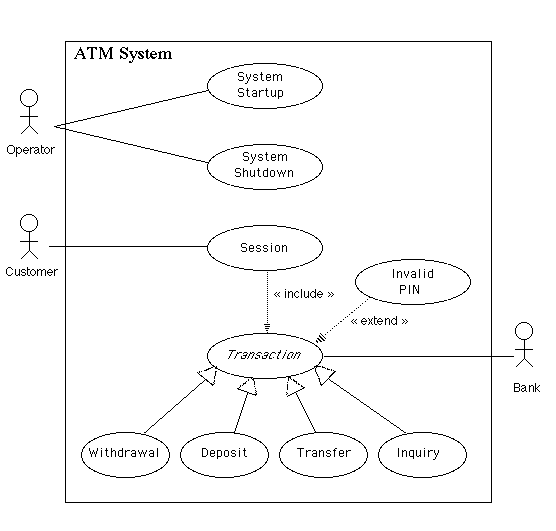

وقتی اپراتور سوئیچ را به وضعیت روشن تبدیل می کند، سیستم راه اندازی می شود. از اپراتور خواسته می شود تا مبلغی را که در حال حاضر پول نقد است واردکند و اتصال به بانک برقرار خواهدشد. سپس سرویس دهی به مشتریان می تواند آغاز شود.
وقتی اپراتور اطمینان حاصل کند که هیچ مشتری از دستگاه استفاده نمی کند ، سیستم خاموش می شود و سپس سوئیچ اپراتور را به موقعیت "خاموش" تبدیل می کند. اتصال به بانک قطع خواهد شد. سپس اپراتور آزاد است پاکت های سپرده شده را پاک کند ، پول نقد و کاغذ را پر کند ، و غیره
ارتباط زمانی شروع می شود که مشتری کارت خودپرداز را در شکاف کارت خوان دستگاه قرار می دهد. دستگاه خودپرداز کارت را به داخل دستگاه می کشد و آن را می خواند. (اگر خواننده به دلیل قرار دادن نامناسب یا نوار آسیب دیده نتواند کارت را بخواند ، کارت خارج می شود ، صفحه خطا نمایش داده می شود و ارتباط لغو می شود.) از مشتری خواسته می شود پین خود را وارد کند
مشتری می تواند هنگام واردکردن پین یا انتخاب نوع تراکنش ، با فشاردادن کلید لغو تراکنش را لغو کند.
توجه: تراکنش یک تعمیم انتزاعی است. هرنوع تراکنش مشخص عملیات خاصی را به روش مناسب پیاده سازی میکند. جریان وقایع ارائه شده دراینجا رفتار مشترک درانواع تراکنش ها را توصیف می کند. جریان رویدادها برای انواع مختلف تراکنش (برداشت، واریز،انتقال،استعلام) ویژگی های خاص آن نوع تراکنش را می دهد.
یک UseCase از تراکنش زمانی شروع می شود که مشتری نوع تراکنش را از منوی گزینه ها انتخاب کند. از مشتری خواسته می شود جزئیات مناسب را ارائه دهد. سپس تراکنش همراه با اطلاعات کارت مشتری و پین مشتری واردشده به بانک ارسال می شود.
اگر بانک تراکنش را تایید کند، تمام مراحل لازم برای تکمیل تراکنش (به عنوان مثال پرداخت پول نقد یا قبول یک پاکت نامه) انجام می شود، و سپس رسید چاپ می شود. سپس از مشتری سوال می شود که آیا مایل است تراکنش دیگری انجام دهد یا خیر.
اگر بانک گزارش کند که پین مشتری نامعتبراست، پسوند پین مشتری نامعتبر انجام می شود و سپس تلاش برای ادامه تراکنش انجام می شود. اگر کارت مشتری به دلیل پین های نامعتبر زیاد حفظ شود، تراکنش لغو می شود و گزینه انجام کار دیگری به مشتری پیشنهاد نمی شود.
اگر تراکنش توسط مشتری لغوشده باشد، یا به هردلیلی به جز ورودی های مکرر پین نامعتبر خراب شود، صفحه ای نمایش داده می شود که دلیل خرابی تراکنش را به مشتری اطلاع می دهد.
مشتری می تواند با فشار دادن کلید لغو همانطور که برای هر نوع تراکنش در زیر شرح داده شده است ، یک تراکنش را لغو کند.
تمام پیام ها به بانک و پاسخ های برگشتی در گزارش خودپرداز ثبت می شود.
یک تراکنش برداشت از مشتری می خواهد که نوع دیگری از حساب را برای برداشت از منوی حساب های موجود انتخاب کند و از منوی مبالغ ممکن مبلغ را انتخاب کند. این سیستم تایید می کند که از ارسال تراکنش به بانک، پول کافی در اختیار دارد تا درخواست را تامین کند.(در غیر این صورت به مشتری اطلاع داده می شود و مبالغ دیگری را وارد می کند.) در صورت نایید تراکنش توسط بانک مقدار مناسب وجه نقد قبل از صدور رسید توسط دستگاه توزیع می شود. (توزیع وجه نقد نیز در گزارش خودپرداز ثبت می شود.)
هرزمان که مشتری قبل از انتخاب مبلغ، کلید لغو را فشار دهد، مشتری می تواند یک تراکنش برداشت را لغو کند.
یک تراکنش سپرده از مشتری می خواهد که نوع دیگری از حساب را برای واریز از منوی حساب های موجود انتخاب کرده و مبلغ را در صفحه کلید تایپ کند. این تراکنش در ابتدا به بانک ارسال می شود تا تایید کند که دستگاه خودپرداز می تواند از این مشتری مبلغی رابه این حساب واریز کند. در صورت تایید تراکنش، دستگاه قبل از صدور رسید، پاکت نامه ای را از مشتری قبول می کند که شامل پول نقد است. پس از دریافت پاکت نامه پیام دوم به بانک ارسال می شود تا تایید کند که بانک می تواند حساب مشتری را اعتبار کند.
هر زمان که بخواهید قبل از قرار دادن پاکت حاوی سپرده ، با فشار دادن کلید لغو ، مشتری می تواند تراکنش ودیعه را لغو کند. معامله به طور خودکار لغو می شود.معامله به طور خودکار لغو می شود اگر مشتری نتواند پاکت حاوی ودیعه را در مدت زمان معقولی پس از درخواست از وی وارد کند.
یک تراکنش انتقال از مشتری می خواهد نوع دیگری از حساب را برای انتقال از منوی حساب های موجود انتخاب کند ، حساب دیگری را برای انتقال انتخاب کند و مبلغ را روی صفحه کلید تایپ کند. قبل از چاپ رسید ، پس از تأیید معامله توسط بانک ، دیگر اقدامی لازم نیست.
مشتری با فشار دادن کلید لغو هر زمان که بخواهد مبلغ را وارد کند ، می تواند تراکنش انتقال را لغو کند.
یک تراکنش استعلام از مشتری می خواهد نوع دیگری از حساب را برای پرس و جو از منوی حساب های موجود انتخاب کند. قبل از چاپ رسید ، پس از تأیید تراکنش توسط بانک ، دیگر اقدامی لازم نیست.
مشتری با فشار دادن کلید لغو هر زمان که بخواهید قبل از انتخاب حساب برای استعلام ، تراکنش استعلام را لغو می کند.
وقتی بانک گزارش دهد که معامله مشتری به دلیل پین نامعتبر تأیید نشده است ، از طریق یک معامله برنامه افزودنی پین نامعتبر شروع می شود. مشتری باید مجدداً پین را وارد کند و درخواست اصلی دوباره به بانک ارسال می شود. اگر بانک اکنون معامله را تأیید کند یا به دلایل دیگری آن را تأیید نکند ، مورد اصلی استفاده ادامه می یابد. در غیر این صورت روند ورود مجدد PIN تکرار می شود. به محض ورود مجدد پین ، این پین برای معاملات فعلی و معاملات بعدی در جلسه استفاده می شود. اگر مشتری سه بار نتواند پین صحیح را وارد کند ، کارت برای همیشه حفظ می شود ، صفحه ای نمایش داده می شود که مشتری را از این امر آگاه می کند و پیشنهاد می کند با بانک تماس بگیرد و کل جلسه مشتری لغو می شود.
اگر مشتری به جای وارد کردن مجدد پین ، لغو را فشار دهد ، تراکنش اصلی لغو می شود.